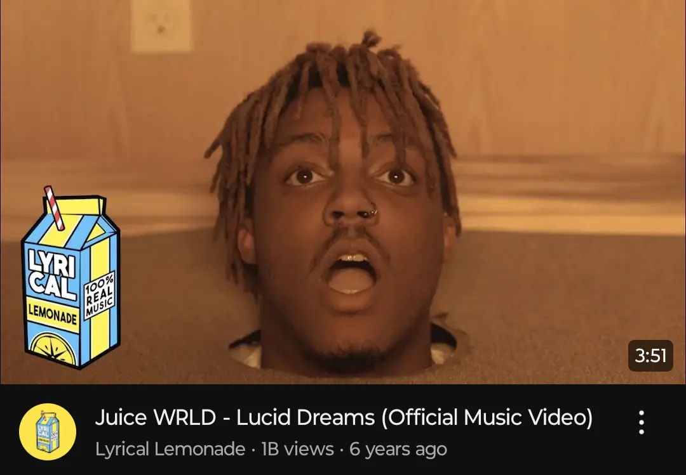
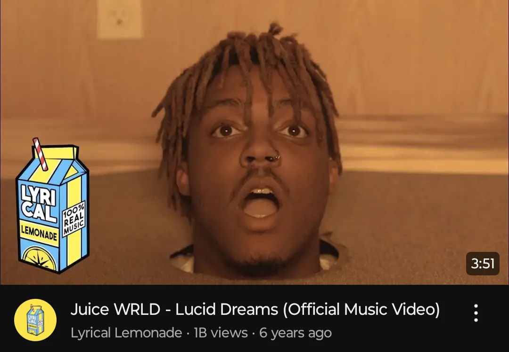

Juice WRLD, de son vrai nom Jarad Anthony Higgins, est né le 2 décembre 1998 à Chicago.
Il grandit avec sa mère dans un environnement chrétien strict, où la musique rap était interdite.
Passionné par la musique dès l’enfance, il commence à enregistrer ses premiers morceaux au lycée et les publie sur SoundCloud.
Il adopte le nom "Juice WRLD" en référence au film Juice avec Tupac.
Rapidement, il se fait remarquer avec le titre "Lucid Dreams", qui connaît un immense succès en 2018.
Son style mêle rap, chant et émotions profondes.
Il décède tragiquement d’une overdose le 8 décembre 2019, à l’âge de 21 ans.
 
